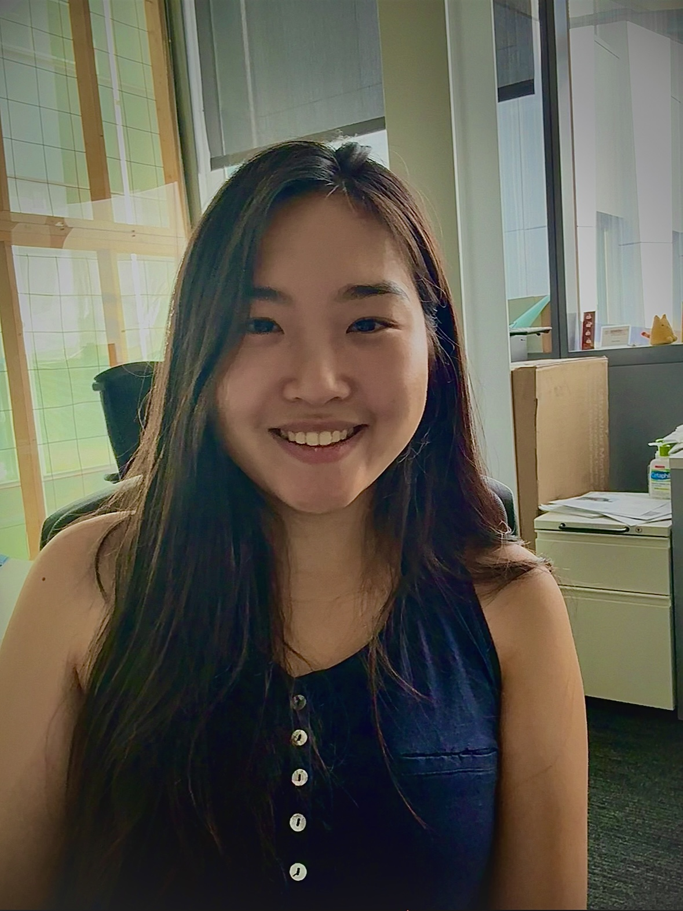

Hover to see something cool!
Hi! I am a Computer Science PhD student in Computational Imaging Lab @ Cornell advised by Professor Kristina Monakhova. My research focuses on machine learning and optimization to advance imaging systems, with the goal of expanding the limits of vision. Currently, I am working on event-based 3D motion detection and diffusion models.
During my Undergraduate studies, I worked on lensless imaging and laser speckle imaging in Professor Seung Ah Lee's Imaging Intelligence Lab. I also worked on Fourier Ptychography in Professor Guoan Zheng's Smart Imaging Lab.